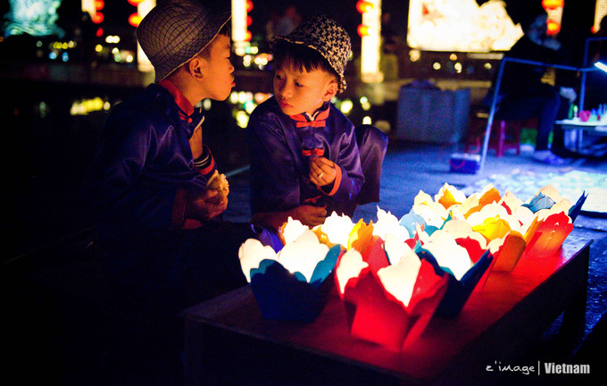

【蜂首纪念】越南以南|看黄昏、追黎明



Day 1：广州（16:25）—河内（17:35）
[三十六行街]
Day 2：[还剑湖] [巴亭广场] [大教堂]
[水上木偶戏] [越南革命博物馆]
河内（18:00）—顺化 Sleeping bus
Day 3：顺化（9:30）
[顺化皇城]
顺化（14:30）—会安（18:00）
[会安古镇]
本着出行就是要简单的原则，签证是直接TB办的。390包顺丰，两个工作日内出签。只需要把护照和2张两寸白底彩照寄给卖家，其余的他会帮你办好。办理的 签证可以提前两个月指定生效日期，所以大家办签证的时候要计划好入境时间.
越南境内兑换汇率最高的只有机场和金店，下了飞机能多换一点就多换一点。在国内除了中国银行广西分行，其他银行均无法兑换越南盾，可以先在国内换好美元，入境后再兑换越南盾。
越南盾的金额去掉3个0，再除以3就是差不多是人民币值了。
越南没有假币，所以也不用担心收到假币，只需要在付款的时候注意货币面额就好。
关于银行卡，出国的话当然是华夏卡人 手一张，全球取款每天第一笔免手续费，这个不需要多说。但是有一点要注意了，发卡银行不收手续费不代表你取钱的ATM就不收手续 费。 HSBC， Vietcom， Samcom，Baoviet ， Vietin，这些都是要 收手续费的。另外，银联卡在越南刷卡消费，会扣除2.5%手续费。
网上信用卡付款须知：在网上预订机票、酒店、bus等，如果是用 其他人的信用卡在国内付款，且信用卡所有者不是出游者之一的话，一定要将付款的信用卡的正反面和持有者护照首页复印，并且让持有人签字，否则，接受预订的 单位或商家有权取消订单。
主流电话卡一共分为三种：Vinaphone、Vettel、Mobifone.
购买渠道：淘宝/当地
信号：Vettel>Vinaphone>Mobifone
价格：Vettel>Mobifone>Vinaphone
当地购买价格：机场=营业厅商铺
电话卡国内和国际话费是分开计算的，就是说一部份话费只能用来打 国内，另一部份只能用来打国外。，因为不管是在tb买还是在当地买，卖家都会帮你把卡操作到能使用为止，而 且越南人民的英语还算过得去，正常沟通是没有问题的，前提是不要人品不好遇到不会说英语的小摊店主。
其实电话卡还是推荐在tb上找一家靠谱的店买了，价格不会差太多，波动就在几块到十几块不等，但是真的省心。电话卡的充值及开通数据包方法我就不copy了
越南主流的交通工具就是taxi、moto、bus还有灰机了，当然会有许多小伙伴选择坐火车
摩托：在越南你要是胆子大也会骑摩托，那就真的不能再棒了，既省钱又方便，不过骑摩托这事还是要量力而行，反正每次骑到十字路口的时候我都会被当地的摩托大军吓到腿软，长这么大第一次看见100+辆摩托在一条道上btw，越南所有的酒店都可以在前台直接租摩托车，要自己去加油，价格实惠，很方便。
open bus：国人基本上都是选择新咖啡，可以分 段买票也可以买全段联票，下面附了网址，所有的信息里面都有，我就不做介绍了（原谅深夜还在码字的我）必须要提醒你们！！！一定要选准真正的 sinh tourist， 尤其在河内，冒牌的sinh tourist随处可见，反正我是买到假的了╥﹏╥坐sleeping bus记得一定要带外套和眼罩保证睡眠质量，网上还有很多关于选位置的技术贴，大家可以去看看。
近来的局势还是比较平稳的。在越南这段时间，越南当地居民给我的整体印象就是真的很善良，不知道是不是是我人品太好，一路上没有遇到被偷被抢，迷路了会有人给我指路，扛不动行李会有人来帮忙，骑车的时候不小心车倒了会有人过来问我有没有事然后帮我把车扶起来，感恩这些一路上的陌生人暖心的帮助，感恩你们的热情与微笑。
保管好贵重物品，其他真的什么都不需要担心，不管政局怎样，大多数越南公民还是很善良的。在餐厅吃饭的时候，还有服务员会刻意问你是不是中国人然后用中文和你交流。实在不放心又想去越南的小伙伴就在国内买一份大保险吧，至少应该会心安一点，我是这样想的。。。
相关目的地:
- 游记相关
- 行程
- 签证
- 货币
- 通讯
- 交通
- 局势